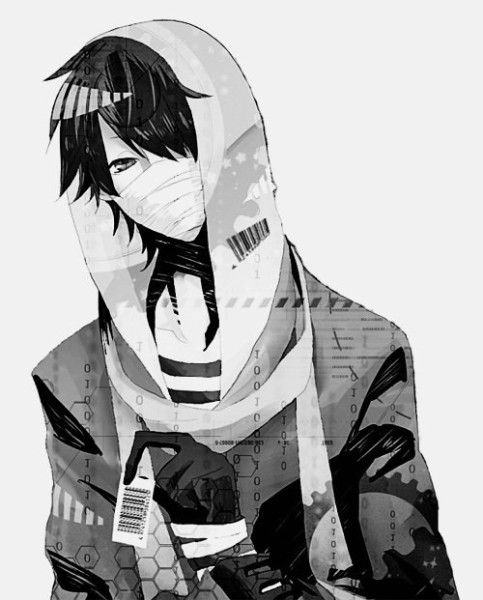

«Мы трэпим по-светски — обсуждай одежду, обсуждай мой образ»
U Think
About Me
Эстетика ночного Парижа, закрытых светских раутов и цифровой минимализм в оттенках обсидиана и бархата. Пространство, где код встречается с высокой модой.
Manifeste
I. L'Esprit
Жизнь слишком коротка для скучных интерфейсов и предсказуемых сценариев. Между закрытыми показами, ночным SVMOSCOW и строками кода рождается особое искусство — делать сложные вещи с парижской легкостью.
Я создаю визуальные концепты, минималистичные веб-пространства и цифровые эксперименты. Мой подход — это баланс между строгой архитектурой кода и расслабленной атмосферой ночного салона.
«Мы трэпим по-светски. Обсуждай одежду, обсуждай мой образ.» — королевский XVII, sv moscow
Chroniques
II. Savoir-FaireВизуальный код
Работа с монохромом, типографикой и настроением. От коротких атмосферных этюдов в TikTok до продуманных веб-интерфейсов в оттенках глубокого чёрного.
Sabor de la vida
Умение находить вкус в деталях: редкий винил, ночные огни мегаполиса, ироничный минимализм и абсолютная свобода самовыражения без лишнего шума.
Цифровой авангард
Эксперименты на Python, HTML и CSS. Создание проектов, которые не обязаны быть утилитарными, но обязаны вызывать эмоцию и оставлять послевкусие.
Collection
III. Le CodeСамый бессмысленный проект
Изящный цифровой абсурд на Python. Доказательство того, что код может быть искусством ради искусства, созданным ради чистого эстетического удовольствия.
Project Portfolio
Минималистичная архитектура вёрстки, работа с сетками и визуальной формой в лучших традициях парижского авангарда.